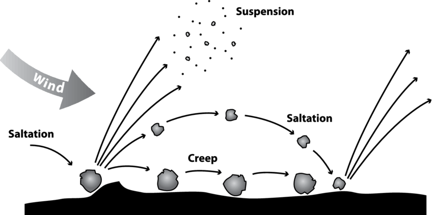

Soil
The top layer of the Earth's surface that supports plant growth. Different types of soil have varying fertility levels and are suitable for different crops.
Soil Profile
A soil profile is a vertical cross-section of the soil, displaying the various layers, or horizons, that make up the soil. Each layer has distinct characteristics, including color, texture, composition, and structure, offering insights into the soil's formation, fertility, and ability to support plant life. The soil profile typically consists of several horizons:

a. O Horizon (Organic Layer): The topmost layer primarily composed of organic matter such as decomposed leaves and plant material. This layer is rich in nutrients and supports the growth of vegetation.
b. A Horizon (Topsoil): Beneath the O horizon lies the topsoil, which is a crucial layer for plant growth. It contains a mix of organic material and mineral particles. Topsoil is dark in color due to its high organic content and is rich in nutrients, making it ideal for agriculture and gardening.
c. E Horizon (Eluviation Layer): Also known as the leaching layer, this horizon is characterized by the removal or leaching of minerals and nutrients due to water percolation. It often appears lighter in color than the layers above and below it.
d. B Horizon (Subsoil): The subsoil contains minerals and nutrients leached from the upper layers. This horizon accumulates minerals like iron, aluminum, and clay, giving it a different texture and color compared to the topsoil.
e. C Horizon (Parent Material): Comprising partially disintegrated or weathered rock, this layer serves as the source of mineral elements for the upper horizons. The C horizon directly influences the soil's composition and properties.
f. R Horizon (Bedrock): The unweathered rock layer at the bottom of the soil profile. Plant roots cannot penetrate this layer, as it is solid rock.
MORE YOU KNOW!
Soil profiles often contain traces of ancient civilizations. Archaeologists study soil layers to find artifacts, fossils, and evidence of past human activities. The study of soil profiles, known as soil archaeology or geoarchaeology, provides valuable insights into ancient agricultural practices, settlement patterns, and environmental changes, helping historians reconstruct the past.Soil Erosion
The literal meaning of 'soil erosion' is wearing away of soil. Soil ero-
sion is defined as the movement of soil components, especially surface-
litter and top soil from one place to another. Soil erosion results in the
loss of fertility because it is the top soil layer which is fertile. If we look
at the world situation, we find that one third of the world's cropland is
getting eroded. Two thirds of the seriously degraded lands lie in Asia
and Africa.
Soil erosion is basically of two types based upon the cause of
erosion:
a. Normal erosion or geologic erosion:
caused by the gradual removal of top soil by natural processes which bring an equilibrium between physical, biological and hydrological activities and maintain a natural balance between erosion and renewal.
b. Accelerated erosion:
This is mainly caused by anthropogenic
(man-made) activities and the rate of erosion is much faster than the
rate of formation of soil. Overgrazing, deforestation and mining are
some important activities causing accelerated erosion.

Climate Agents
Water and wind are the climatic agents of
soil erosion. Water affects soil erosion in the form of torrential rains,
rapid flow of water along slopes, run-off, wave action and melting and
movement of snow.
- Water induced soil erosion is of the following types:
- Sheet erosion: when there is uniform removal of a thin layer of soil from a large surface area, it is called sheet erosion. This is usually due to run-off water.
- Rill erosion: When there is rainfall and rapidly running water produces finger-shaped grooves or rills over the area, it is called rill erosion.
- Gully erosion: It is a more prominent type of soil erosion. When the rainfall is very heavy, deeper cavities or gullies are formed, which may be U or V shaped.
- Slip erosion: This occurs due to heavy rainfall on slopes of hills and mountains.
- Stream bank erosion: During the rainy season, when fast run- ning streams take a turn in some other direction, they cut the soil and make caves in the banks.
- Wind induced soil erosion is of the following types:
- Saltation: This occurs under the influence of direct pressure of stormy wind and the soil particles of 1-1.5 mm diameter move up in vertical direction.
- Suspemsion: When there is rainfall and rapidly running water produces finger-shaped grooves or rills over the area, it is called rill erosion.
- Gully erosion: Here fine soil particles (less than 1 mm dia) which are suspended in the alr are kicked up and taken away to distant places.
- Surface creep: Here larger particles (5-10 mm diameter) creep over the soil surface along with wind.
- 
Biotic agent
Excessive grazing, mining and deforestation
are the major biotic agents responsible for soil erosion. Due to these
processes the top soil is disturbed or rendered devoid of vegetation cover.
So the land is directly exposed to the action of various physical forces
facilitating erosion. Overgrazing accounts for 35% of the world's soil erosion while deforestation is responsible for 30% of the earth's
seriously eroded lands. Unsustainable methods of farming cause 28%
of soil erosion.
Deforestation without reforestation, overgrazing by cattle, surface mining without land reclamation, irrigation techniques that lead
to salt build-up, water-logged soil, farming on land with unsuitable
terrain, soil compaction by agricultural machinery, action of cattle trarn
pling etc make the top soil vulnerable to erosion.